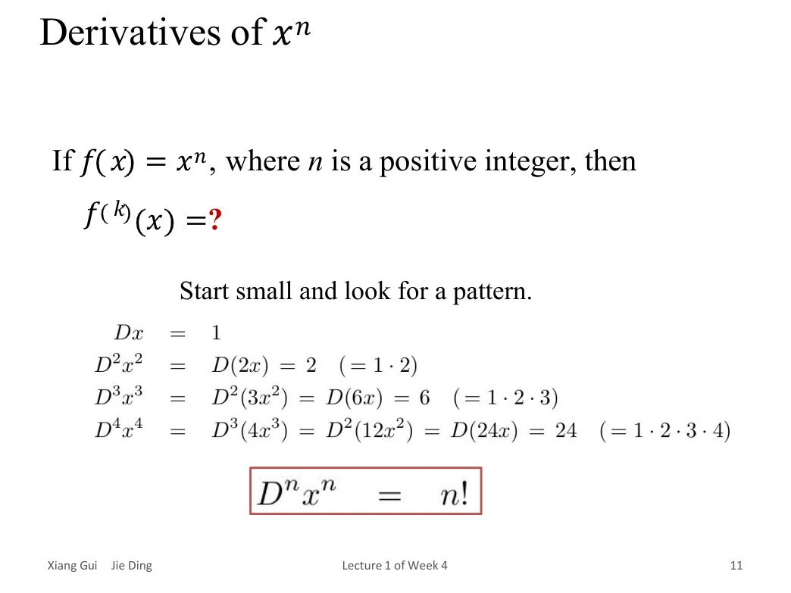
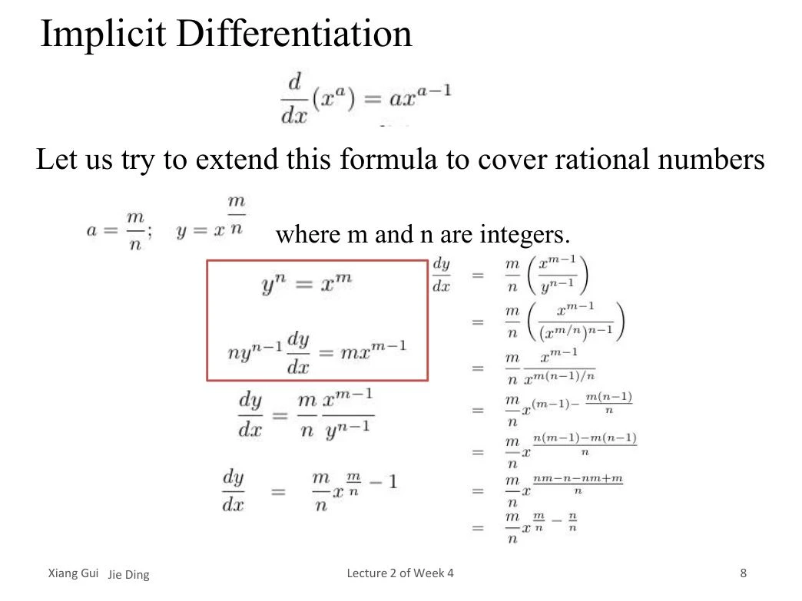

HDD4010 工程数学 I · 第 04 / 08 讲
第 2 章 · 高阶导数、中值定理、极值与隐函数
Higher-Order Derivatives, Mean-Value Theorem, Extrema and Implicit Differentiation
所属章节：第 2 章 导数与微分
资料来源 · 2 项 / 已附 0 项
Topic 4/EMI_Week4_Lecture1.pdf未附原文件Topic 4/EMI_Week4_Lecture2.pdf未附原文件
未附文件仅列原始名称；版本与核对日期由维护者登记。
本节定位
第 3 讲建立了导数并给出了求导法则，本讲把导数用到三件具体事情上：① 连续求导得到高阶导数，用来描述「变化率的变化率」（加速度、凹凸性）；② 用中值定理把「一点的导数」与「区间上的整体行为」连起来，从而判断单调性；③ 通过求导反过来找函数（原函数与初值问题），为第 7 讲的积分做准备。
本讲还包含两个技术上非常重要的工具：隐函数求导（方程不解出 y 也能求 y′）与极值判定（临界点 + 闭区间端点）。这两项在模拟卷中直接出现（见第 5 章），必须练到能默写流程。
学完本节你应当能够：
- 写出并计算二阶以上的高阶导数，包括 xⁿ、1/(1+x)、sin、cos 的一般公式
- 由位置函数读出速度、速率与加速度，并判断加速还是减速
- 陈述并应用拉格朗日中值定理与罗尔定理，并用一阶、二阶导数判定单调区间、凹凸与拐点，证明简单不等式
- 求闭区间上连续函数的最值（临界点 + 端点比较）
- 对隐式方程求一阶与二阶导数，并写出切线方程
- 求不定积分并用初始条件定出特解（一阶与二阶初值问题）
4.1 高阶导数
导数是函数，所以可以再求导。二阶导数记作 f″(x)、y″、d²y/dx²，定义为 f″ = (f′)′。更高阶依次类推，n 阶导数记作 f⁽ⁿ⁾(x)、dⁿy/dxⁿ，并约定 f⁽⁰⁾ = f。
记号警告：d²y/dx² 是整体记号，表示「对 y 求两次关于 x 的导数」，不是 (dy)²/(dx)² 这样的分数；但它在链式法则与代换中又能像分数一样运算（第 7 讲换元积分会用到）。
4.2 xⁿ 与多项式的 n 阶导数
对 f(x) = xⁿ（n 为正整数），逐次求导：
f⁽ᵏ⁾(x) = n(n−1)(n−2)⋯(n−k+1) x^{n−k} = n!/(n−k)! · x^{n−k}（0 ≤ k ≤ n），
当 k > n 时 f⁽ᵏ⁾ = 0。这里的阶乘定义为 n! = n(n−1)⋯3·2·1（n ≥ 1），并规定 0! = 1。
对一般多项式 P(x) = aₙxⁿ + ⋯ + a₁x + a₀（aₙ ≠ 0），由线性性可得
P⁽ᵏ⁾(x) = aₙ · n!/(n−k)! · x^{n−k} + ⋯（k ≤ n），特别地 P⁽ⁿ⁾(x) = n! aₙ——一个常数，再求导就是 0。这条结论是后面泰勒展开的理论基础（本课只需知道）。
4.3 运动学：位置、速度、速率、加速度
设质点沿 x 轴运动，位置为 x(t)（t 为时间）：
- 速度
v(t) = x′(t)，是位置的变化率； - 速率（speed）
= |v(t)|，是标量，没有方向； - 加速度
a(t) = v′(t) = x″(t)，是速度的变化率。
速度符号的读法：v > 0 向正方向（右）运动；v < 0 向负方向（左）运动；v = 0 瞬时静止（此时 x(t) 处于临界点）。
加速还是减速的判据：看 v 与 a 的符号是否相同。同号则速率增大（加速），异号则速率减小（减速），与 v 本身的正负无关。这一点比「a > 0 就是加速」准确得多，也是模拟卷的考点。
源文件例子：x(t) = t³ − 6t²，则 v(t) = 3t² − 12t，a(t) = 6t − 12。在 t = 3：x(3) = 27 − 54 = −27（原点左侧 27 m），v(3) = 27 − 36 = −9（向左 9 m/s），a(3) = 6（加速度 +6 m/s²，方向向右，故在减速）。源文件此处把 v 的值印成 −9 却把时间标成 1，属排版错位，按 v(3) = −9 理解。）
源文件任务：x(t) = 2t³ − 15t² + 24t，求 v、a，并判断 t = 2 时的运动方向与速率。
v = 6t² − 30t + 24，a = 12t − 30；v(2) = 24 − 60 + 24 = −12，a(2) = 24 − 30 = −6。v 与 a 同号（都为负），故速率在增大：向左运动，速率为 12 m/s 且越来越快。
4.4 一阶与二阶导数的几何意义
| 导数 | 几何含义 | 判断信息 |
|---|---|---|
f′(x) | 切线斜率，瞬时变化率 | f′ > 0 递增；f′ < 0 递减；f′ = 0 驻点 |
f″(x) | 斜率的变化率（弯曲程度） | f″ > 0 凹向上；f″ < 0 凹向下；变号处为拐点 |
源文件两个对照例子：f(x) = x²：f′ = 2x（x < 0 递减、x = 0 驻点、x > 0 递增），f″ = 2 > 0（处处凹向上）。f(x) = x³：f′ = 3x²（除 0 外都递增，x = 0 处驻点但不改变单调性），f″ = 6x（x < 0 凹向下、x > 0 凹向上，x = 0 是拐点）。
x³ 在 0 处 f′ = 0，但函数在那里既不是极大也不是极小——它是「驻而不极」的拐点。判断极值必须看 f′ 在该点两侧是否变号。4.5 三角函数与 1/(1+x) 的高阶导数
sin 与 cos 的导数四步一循环：
sin → cos → −sin → −cos → sin，
用「位移形式」可以把循环写成一个公式：
(sin x)⁽ⁿ⁾ = sin(x + nπ/2)，(cos x)⁽ⁿ⁾ = cos(x + nπ/2)，
并且 f⁽ⁿ⁺⁴⁾ = f⁽ⁿ⁾（周期为 4）。验证：n = 1 时 sin(x + π/2) = cos x ✓；n = 2 时 sin(x + π) = −sin x ✓。
源文件例 1：y = cos 2x 的四阶导数。链式法则每求一次多一个因子 2：y′ = −2sin2x、y″ = −4cos2x、y‴ = 8sin2x、y⁗ = 16cos2x = 2⁴cos2x。
源文件例 2：y = 1/(1+x) = (1+x)⁻¹ 的 n 阶导数。逐次计算：y′ = −(1+x)⁻²、y″ = 2(1+x)⁻³、y‴ = −3!(1+x)⁻⁴、y⁗ = 4!(1+x)⁻⁵，归纳出
y⁽ⁿ⁾ = (−1)ⁿ n! (1+x)^{−n−1}（n ≥ 1）。
归纳法验证：假设 n = k 成立，则求导一次得 (−1)ᵏk!(−k−1)(1+x)^{−k−2} = (−1)^{k+1}(k+1)!(1+x)^{−(k+1)−1}，正是公式对 k+1 的预测；又 n = 1 已验证，故对所有正整数成立。源文件把这一步写成「if the formula is correct for n = k, then it is also correct for n = k+1」，这就是数学归纳法的标准句式。
4.6 中值定理
源文件的引入故事：从 Lahti 到 Lappeenranta 全程 150 mile，用了 2 小时，则途中必有某一时刻的瞬时速度恰好等于平均速度 75 mph。这就是中值定理的现实版本。
拉格朗日中值定理（Mean-Value Theorem, MVT）：若 f 在闭区间 [a, b] 上连续、在开区间 (a, b) 内可导，则存在 c ∈ (a, b) 使
f′(c) = (f(b) − f(a))/(b − a)。
几何意义：曲线上必有一点的切线与连接两端点的割线平行。源文件给出的证明思想很直观：把一条与割线平行的虚线从下方往上平移，第一次接触曲线时的那条线就是切线，切点就是 c；也可以从上方往下移。严格证明需要构造辅助函数 h(x) = f(x) − f(a) − [(f(b)−f(a))/(b−a)](x − a)，验证 h(a) = h(b) = 0，再用罗尔定理。
三个条件缺一不可：闭区间连续、开区间可导（端点可不导）、以及区间有限。f(x) = |x| 在 [−1, 1] 上不满足「开区间可导」，定理结论确实失效（找不到斜率为 0 的点，因为割线斜率就是 0 而 f′ 从不取 0）。
4.7 罗尔定理
罗尔定理（Rolle’s Theorem）：若 f 在 [a, b] 上连续、在 (a, b) 内可导，且 f(a) = f(b)，则存在 c ∈ (a, b) 使 f′(c) = 0。
它是 MVT 在 f(a) = f(b) 时的特例（此时割线斜率为 0）。反过来，MVT 的严格证明又依赖于罗尔定理，两者是同一件事的两种形态。
4.8 由 MVT 得到单调性判据
设 f 在区间 I 上连续、在内部可导，则：
f′(x) > 0对一切内点成立 ⟹ f 在 I 上严格递增；f′(x) < 0⟹ 严格递减；f′(x) ≥ 0⟹ 不减（nondecreasing）；f′(x) ≤ 0⟹ 不增；f′(x) = 0恒成立 ⟹ f 为常数。
证明（以递增为例）：任取 x₁ < x₂，在 [x₁, x₂] 上用 MVT，得 f(x₂) − f(x₁) = (x₂ − x₁)f′(c)，其中 c ∈ (x₁, x₂)。因为 x₂ − x₁ > 0 且 f′(c) > 0，所以 f(x₂) > f(x₁)。
f(x) = x³ 在 ℝ 上严格递增，但 f′(0) = 0。所以「严格递增 ⟹ f′ > 0 处处成立」是错的，只能说 f′ ≥ 0。答题时若题目要求「证明递增」，用 f′ > 0 是充分条件；若题目说「已知递增」，不能推出 f′ > 0。4.9 用 MVT 证明不等式
源文件例子：证明 √(1+x) ≤ 1 + x/2 对 x ≥ −1 成立。令 f(x) = √(1+x)，在 [−1, ∞) 连续、在 (−1, ∞) 可导，f′(x) = 1/(2√(1+x))。分三种情形：
- x > 0：在
[0, x]上用 MVT，存在c ∈ (0, x)使(√(1+x) − 1)/x = 1/(2√(1+c)) < 1/2，两边乘x > 0得√(1+x) − 1 < x/2； - −1 < x < 0：在
[x, 0]上用 MVT，存在c ∈ (x, 0)使(1 − √(1+x))/(−x) = 1/(2√(1+c)) < 1/2，注意此处乘的是负数x < 0，不等号方向要翻转，仍得√(1+x) − 1 < x/2； - x = 0：两边都等于 1，取等号。
合并三种情形即得 √(1+x) ≤ 1 + x/2。注意 x = −1 时左边为 0、右边为 1/2，不等式仍成立（端点单独检查）。
4.10 极值：定义、临界点与求法
设 c 在 f 的定义域 D 内：f(c) 是绝对最大值（absolute maximum），若对一切 x ∈ D 有 f(x) ≤ f(c)；绝对最小值类似（f(x) ≥ f(c)）。f(c) 是局部最大值（local maximum），若存在含 c 的开区间使该区间内 f(x) ≤ f(c)；局部最小类似。
源文件的图形例子（[a, b] 上的一条曲线）说明：绝对最大在 x₅、绝对最小在 a；局部最大出现在 x₁、x₃、x₅、x₇，局部最小在 x₂、x₄、x₆；而 [x₆, x₇] 上函数为常数，那段区间内每一点既是局部最大又是局部最小。这说明极值点不一定唯一，也不一定孤立。
临界点（critical point）：若 c 是定义域的内点且 f′(c) = 0 或 f′(c) 不存在，则 (c, f(c)) 是临界点。临界点可能是绝对极值、局部极值，也可能什么都不是（如 x³ 的 0）。
闭区间上求最值的完整流程：① 求 f′；② 找出 (a, b) 内所有 f′ = 0 与 f′ 不存在的点；③ 计算这些点与两个端点 a、b 的函数值；④ 取最大者与最小者。端点必须参与比较，这是最容易被忽略的一步。
源文件例：f(x) = x³ − 12x + 1。f′ = 3x² − 12 = 3(x−2)(x+2)，临界点 x = ±2。符号表：(−∞, −2) 上 f′ > 0；(−2, 2) 上 f′ < 0；(2, ∞) 上 f′ > 0。故 x = −2 是局部最大（f(−2) = 17），x = 2 是局部最小（f(2) = −15）。又因 x → ±∞ 时 f → ±∞，函数无绝对极值。
源文件任务：f(x) = 12x − x³ 在 [−3, 1] 上。f′ = 12 − 3x² = 0 得 x = ±2，只有 x = −2 在区间内。比较 f(−3) = −36 + 27 = −9、f(−2) = −24 + 8 = −16、f(1) = 12 − 1 = 11，故绝对最小 −16（在 x = −2），绝对最大 11（在 x = 1）。
4.11 隐函数求导
曲线通常是方程 F(x, y) = 0 的图形，例如 x² + y² − 25 = 0。有时能解出 y = f(x)（显函数），有时解不出，但方程仍然在局部确定了一个或多个隐函数（implicit function）y = y(x)。
隐函数求导的步骤：把方程两边对 x 求导，过程中把 y 看成 x 的函数并随时使用链式法则（d/dx[y²] = 2y·y′、d/dx[sin y] = cos y·y′），然后解出 y′。
源文件例：圆 x² + y² = 25 在 (3, −4) 处的斜率。两边求导：2x + 2y y′ = 0，故 y′ = −x/y。代入 (3, −4)：y′ = −3/(−4) = 3/4。
源文件例：y sin y = x³ + cos x。左边用乘积法则 + 链式法则：y′ sin y + y cos y·y′；右边：3x² − sin x。整理得
y′ = (3x² − sin x)/(sin y + y cos y)。
源文件例：x² + xy + 2y³ = 4 在 (−2, 1) 的切线。先验证点在曲线上：4 + (−2) + 2 = 4 ✓。求导：2x + y + x y′ + 6y² y′ = 0。代入 x = −2, y = 1：−4 + 1 − 2y′ + 6y′ = 0，即 4y′ = 3，y′ = 3/4。切线：y = (3/4)(x + 2) + 1，整理为 3x − 4y = −10。
源文件例（二阶导）：xy + y² = 2x。一次求导：y + x y′ + 2y y′ = 2，故 y′ = (2 − y)/(x + 2y)。再次求导：y′ + y′ + x y″ + 2(y′)² + 2y y″ = 0，即 y″(x + 2y) = −2y′(1 + y′)，于是
y″ = −2y′(1 + y′)/(x + 2y) = −2(2 − y)(x + y + 2)/(x + 2y)³（把 y′ 代回并通分）。
源文件例（正交轨迹）：证明双曲线族 x² − y² = a 与 xy = b（a, b ≠ 0）在任何交点处正交。前者求导得 2x − 2y y′ = 0，y′ = x/y；后者求导得 y + x y′ = 0，y′ = −y/x。两斜率相乘 (x/y)(−y/x) = −1，故切线垂直。
4.12 原函数与不定积分
若 F′(x) = f(x)，则称 F 是 f 的一个原函数（antiderivative）。原函数不唯一：若 F 是一个原函数，则 F(x) + C（C 为任意常数）也都是原函数，因为常数的导数为 0。
源文件例子：f(x) = x² 的原函数是 F(x) = x³/3 + C。验算：(x³/3 + C)′ = x² ✓。这也是检查积分结果唯一可靠的方法——求导回去。
f 的全体原函数称为 f 的不定积分（indefinite integral），记作
∫f(x)dx = F(x) + C，
其中 ∫ 是积分号（integral sign），f(x) 是被积函数，dx 指明积分变量，C 称为积分常数（constant of integration）。
由已知导数表反读，得到最基本的三条积分公式（源文件列出）：
∫xᵃdx = x^{a+1}/(a+1) + C（a ≠ −1）∫sin x dx = −cos x + C∫sec²x dx = tan x + C
再加上显然的 ∫dx = x + C、∫cos x dx = sin x + C，就构成了第 7 讲所有积分技巧的原料。注意幂公式里 a = −1 被排除：那正是 ∫dx/x = ln|x| + C（第 5 讲），它不属于幂函数族。
4.13 初值问题
含未知函数导数的方程叫微分方程（differential equation）。一个初值问题（initial-value problem, IVP）由两部分组成：
- 微分方程
dy/dx = f(x) - 初始条件
y(x₀) = y₀
源文件给出三步解法：
- 求通解（general antiderivative）：
y = ∫f(x)dx = F(x) + C - 代入初始条件定常数：
F(x₀) + C = y₀ ⟹ C = y₀ − F(x₀) - 写出特解：
y = F(x) + y₀ − F(x₀)
源文件例：解 dy/dx = 6x² − 1，y(2) = 10。通解 y = 2x³ − x + C；代入 x = 2：16 − 2 + C = 10，故 C = −4；特解 y = 2x³ − x − 4。验算：y′ = 6x² − 1 ✓，y(2) = 16 − 2 − 4 = 10 ✓。
二阶初值问题：形如 y″ = f(x)，需要两个初始条件（通常给 y′(x₀) 与 y(x₀)），求解要积分两次，产生两个任意常数，分别用两个条件定出。源文件指出它的应用背景：物理中的运动方程、工程中的谐振子、生物中的种群动力学。
源文件例：y″ = sin x，y′(π) = −1，y(π) = 2。第一次积分：y′ = −cos x + C₁；代 y′(π) = −1：−cos π + C₁ = 1 + C₁ = −1，故 C₁ = −2。第二次积分：y = −sin x − 2x + C₂；代 y(π) = 2：0 − 2π + C₂ = 2，故 C₂ = 2 + 2π。特解 y = 2 + 2π − sin x − 2x。
重力加速度（源文件 p23）：近地面重力加速度恒定且向下，g ≈ 9.8 m/s²，即 a(t) = −g。两次积分得
v(t) = v₀ − gt，s(t) = s₀ + v₀t − (1/2)gt²，
其中 s₀ = s(0) 是初始位置、v₀ = v′(0) 是初速度（取向上为正）。
源文件例：以 9.8 m/s 从地面竖直上抛。s₀ = 0、v₀ = 9.8，故 v = 9.8 − 9.8t、s = 9.8t − 4.9t²。最高点处 v = 0 得 t = 1，最大高度 s(1) = 9.8 − 4.9 = 4.9 m。落地时 s = 0：9.8t − 4.9t² = t(9.8 − 4.9t) = 0，得 t = 0 或 t = 2，故 t = 2 s 落地；落地速度 v(2) = 9.8 − 19.6 = −9.8 m/s，故撞击速率为 9.8 m/s（与初速度大小相等，方向相反）。
4.14 常见误解
- 把原函数与导数混为一谈：
∫f求的是「谁求导得 f」，方向与求导相反；写完必须求导回去验算。 - 漏写常数 C：不定积分的结果是「一族函数」，漏 C 会整题扣分；二阶 IVP 要两个常数，只写一个说明只积分了一次。
- 二阶 IVP 用一个条件定两个常数：先用
y′的条件定C₁，再用y的条件定C₂，顺序不能反（因为C₂在第二次积分后才出现）。 - 重力公式符号错：向上为正时加速度是
−g，所以v = v₀ − gt；若取向下为正，则全部符号翻转，两种约定不能混用。
原版图页（源 PDF 插图页）






拓展深化 4.2.1 微分中值定理体系链：罗尔 ⟹ 拉格朗日 ⟹ 柯西中值定理
由闭区间连续函数必有最值结合费马引理证明罗尔定理；构造割线偏差辅助函数证明拉格朗日定理；再推广至参数曲线比率辅助函数证明柯西定理。
整个微分学的核心理论基石由三大中值定理递进构成：
1. 费马引理（Fermat's Lemma）：若 f 在可导点 c 取极值，则必有 f′(c) = 0。证明考察左导数 ≥ 0 与右导数 ≤ 0，迫使两边极限等于 0。
2. 罗尔定理（Rolle's Theorem）：若 f ∈ C[a, b]，在 (a, b) 可导，且 f(a) = f(b)。由极值定理，f 在闭区间必达最大值 M 与最小值 m。若 M = m 则为常数函数导数恒为 0；若 M ≠ m，至少有一个极值在开区间内取得，由费马引理得 f′(ξ) = 0。
3. 拉格朗日中值定理（Lagrange MVT）：构造割线偏差辅助函数 g(x) = f(x) − f(a) − [(f(b)−f(a))/(b−a)](x − a)。易验 g(a) = g(b) = 0。由罗尔定理，存在 ξ ∈ (a, b) 使得 g′(ξ) = 0，即：
f′(ξ) = [f(b) − f(a)] / (b − a) ⟺ f(b) − f(a) = f′(ξ)(b − a)4. 柯西中值定理（Cauchy MVT）：若有两个函数 f, g，构造辅助函数 h(x) = [g(b) − g(a)]f(x) − [f(b) − f(a)]g(x)，同样满足 h(a) = h(b)。由罗尔定理可得：
[f(b) − f(a)] / [g(b) − g(a)] = f′(ξ) / g′(ξ)这是洛必达法则（L'Hôpital's Rule）求未定式极限的直接理论依据。
| English | 中文 | 说明 / 例句 |
|---|---|---|
| higher-order derivative | 高阶导数 | f″ = (f′)′, f⁽ⁿ⁾ is the n-th derivative. |
| factorial | 阶乘 | n! = n(n−1)⋯1 with 0! = 1; appears in (xⁿ)⁽ᵏ⁾. |
| kinematics | 运动学 | x(t) position, v = x′ velocity, |v| speed, a = v′ acceleration. |
| concavity | 凹凸性 | f″ > 0 concave up, f″ < 0 concave down. |
| inflection point | 拐点 | Where concavity changes, i.e. f″ changes sign. |
| mean-value theorem | 中值定理 | There is c with f′(c) = (f(b) − f(a))/(b − a). |
| Rolle theorem | 罗尔定理 | If f(a) = f(b) and f is differentiable inside, some c has f′(c) = 0. |
| monotonicity | 单调性 | f′ > 0 implies increasing; the converse fails for x³. |
| critical point | 临界点 | Interior point where f′ = 0 or f′ does not exist. |
| extreme value | 极值 | Absolute or local maximum/minimum of a function. |
| implicit differentiation | 隐函数求导 | Differentiate F(x, y) = 0 treating y as a function of x. |
| orthogonal trajectories | 正交轨迹 | Two families of curves meeting at right angles: slopes multiply to −1. |
| antiderivative | 原函数 | A function F with F′ = f; determined only up to a constant. |
| indefinite integral | 不定积分 | The family F(x) + C of all antiderivatives, written ∫f(x)dx. |
| initial value problem | 初值问题 | A differential equation plus initial condition fixing the constant. |
一阶导：v(t) = x′(t) = 6t² − 30t + 24。二阶导：a(t) = v′(t) = 12t − 30。
代 t = 2：v(2) = 24 − 60 + 24 = −12；a(2) = 24 − 30 = −6。
方向：v < 0，质点向负方向（左）运动。速率：|v| = 12 m/s。
加速/减速：v 与 a 同号（都为负），故速率在增大——它向左运动且越来越快。若符号相反，则是减速。
方法迁移：三步走——求 v = x′、求 a = v′、在指定时刻比较 v 与 a 的符号。注意速率是 |v|，写答案时不能漏绝对值。
令 f(x) = √(1+x)，在 [−1, ∞) 连续、在 (−1, ∞) 可导，f′(x) = 1/(2√(1+x))。
情形 1（x > 0）：在 [0, x] 上用 MVT，存在 c ∈ (0, x) 使 (√(1+x) − 1)/x = 1/(2√(1+c))。因为 c > 0，所以 √(1+c) > 1，右端 < 1/2。两边乘 x > 0：√(1+x) − 1 < x/2。
情形 2（−1 < x < 0）：在 [x, 0] 上用 MVT，存在 c ∈ (x, 0) 使 (1 − √(1+x))/(0 − x) = 1/(2√(1+c))。此时 1 + c < 1，故 √(1+c) < 1、f′(c) > 1/2，于是 (1 − √(1+x))/(−x) > 1/2。两边乘 −x > 0 得 1 − √(1+x) > −x/2，即 √(1+x) < 1 + x/2。
情形 3（x = 0）：两边都等于 1，取等号。三种情形合并即得 √(1+x) ≤ 1 + x/2；x = −1 时左边为 0、右边为 1/2，端点单独检查也成立。
符号从哪来：分母 0 − x = −x 在 x < 0 时为正，乘它不改方向；真正决定方向的是 √(1+c) < 1 让导数比 1/2 大。若误写成 f′(c) < 1/2，整条不等式就会反过来，这是本题唯一的陷阱。
(a) f′ = 3x² − 12 = 3(x−2)(x+2)，临界点 x = ±2。符号表：x < −2 时 f′ > 0，−2 < x < 2 时 f′ < 0，x > 2 时 f′ > 0。
故 x = −2 为局部最大，f(−2) = −8 + 24 + 1 = 17；x = 2 为局部最小，f(2) = 8 − 24 + 1 = −15。因 x → ±∞ 时 f → ±∞，无绝对极值。
(b) f′ = 12 − 3x² = 0 得 x = ±2；区间 [−3, 1] 内只有 x = −2。
比较三点：f(−3) = −36 + 27 = −9；f(−2) = −24 + 8 = −16；f(1) = 12 − 1 = 11。
故绝对最小值为 −16（在 x = −2），绝对最大值为 11（在 x = 1）。注意 x = 2 不在区间内，不能参与比较；端点 x = 1 恰好取得最大值，这正是「闭区间必须查端点」的典型例子。
(a) 两边对 x 求导，注意 y 是 x 的函数：2x + 2y·y′ = 0，故 y′ = −x/y。
代入 (3, −4)：y′ = −3/(−4) = 3/4。可以验证：圆心到该点的半径斜率为 −4/3，切线斜率与其乘积为 −1，一致。
(b) 先验证 (−2, 1) 在曲线上：4 + (−2)(1) + 2(1)³ = 4 ✓。
求导：2x + y + x y′ + 6y² y′ = 0（其中 xy 用乘积法则，2y³ 用链式法则）。
代入 x = −2, y = 1：−4 + 1 − 2y′ + 6y′ = 0，即 4y′ = 3，y′ = 3/4。
切线：y = (3/4)(x + 2) + 1，两边乘 4 整理得 4y = 3x + 10，即 3x − 4y = −10。
通用流程：① 验证点在曲线上；② 两边求导（y 视为 y(x)）；③ 先代点再解 y′（比先解出 y′ 再代点更省力）；④ 用点斜式写切线。
- 求
y = cos 2x的四阶导数。 - 求
y = 1/(1+x)的 n 阶导数，并用归纳法说明。 - 求
f(x) = x³ − 3x + 6的单调区间。 - 证明
f(x) = x³ − 3x² + 1在(0, 2)上递减；并说明f(x) = sin x在(−π/2, π/2)上递增。 - 解初值问题
dy/dx = 6x² − 1，y(2) = 10。 - 解二阶初值问题
y″ = sin x，y′(π) = −1，y(π) = 2；并求xy + y² = 2x的y″（用y′表示）。
答案与思路
1. y′ = −2sin2x、y″ = −4cos2x、y‴ = 8sin2x、y⁗ = 16cos2x。规律：每求一次导乘 2，符号四步循环。
2. y⁽ⁿ⁾ = (−1)ⁿ n! (1+x)^{−n−1}。归纳：n = 1 时 −(1+x)⁻² ✓；若对 k 成立，再求导得 (−1)ᵏk!(−k−1)(1+x)^{−k−2} = (−1)^{k+1}(k+1)!(1+x)^{−(k+1)−1}，形式上与 k+1 的预测一致。
3. f′ = 3x² − 3 = 3(x−1)(x+1)。递增区间 (−∞, −1) 与 (1, ∞)，递减区间 (−1, 1)。
4. f′ = 3x² − 6x = 3x(x−2)，在 (0, 2) 上 x > 0 且 x − 2 < 0，故 f′ < 0，递减。g(x) = sin x，g′ = cos x > 0 对 x ∈ (−π/2, π/2) 成立（该区间内 cos 为正），故递增。
5. y = ∫(6x² − 1)dx = 2x³ − x + C。代 y(2) = 10：16 − 2 + C = 10，得 C = −4，故 y = 2x³ − x − 4。
6. 第一次积分：y′ = −cos x + C₁；代 y′(π) = −1：−(−1) + C₁ = −1，C₁ = −2。第二次积分：y = −sin x − 2x + C₂；代 y(π) = 2：0 − 2π + C₂ = 2，C₂ = 2 + 2π，故 y = 2 + 2π − sin x − 2x。对 xy + y² = 2x：y′ = (2 − y)/(x + 2y)，y″ = −2(2 − y)(x + y + 2)/(x + 2y)³。
cos2x 型与 1/(1+x) 型）；②运动学三量（v、|v|、a）与加速/减速判断；③MVT 证明不等式或单调性；④闭区间最值（临界点 + 端点）；⑤隐函数求导与切线；⑥一阶、二阶初值问题的定常数。y² 求导得 2y·y′，对 xy 得 y + x y′，对 sin y 得 cos y·y′；少写一个 y′ 就整题错。方法与清单
闭区间求最值（四步）
- 求
f′(x)并因式分解 - 解
f′ = 0，并找出f′不存在的内点，筛出落在区间内的临界点 - 计算这些点的函数值，再加上两个端点的函数值
- 比较大小，写出最大值、最小值及其对应的 x
隐函数求导（四步）
- 把方程整理为
F(x, y) = 0，先验证给定点确实在曲线上 - 两边对 x 求导，凡含 y 的项都要乘
y′（链式法则），含xy的项用乘积法则 - 把已知点的坐标代入，先求数值再解
y′（比先解表达式再代点省力） - 写切线/法线时用点斜式，并整理成题目要求的形式
解初值问题（三步）
- 求不定积分得到通解，带一个常数 C（二阶方程要积两次、带两个常数）
- 把初始条件代入，解出常数（二阶要分别用
y′与y的条件） - 把常数写回通解得到特解，并回代初始条件验算
| 源文件 | 页码 | 覆盖知识点 |
|---|---|---|
| Topic 4/EMI_Week4_Lecture1.pdf | p2–p4 | 高阶导数记号（二阶与 n 阶） |
| Topic 4/EMI_Week4_Lecture1.pdf | p5–p8 | 运动学三量、速度符号解释、x = t³−6t² 与 2t³−15t²+24t 的任务 |
| Topic 4/EMI_Week4_Lecture1.pdf | p9–p10 | 一阶/二阶导数的几何意义、凹凸与拐点、x² 与 x³ 对照 |
| Topic 4/EMI_Week4_Lecture1.pdf | p11–p19 | xⁿ 的 n 阶导数与阶乘、多项式的 n 阶导数、sin/cos 的周期性与位移公式、cos2x 与 1/(1+x) 的例题 |
| Topic 4/EMI_Week4_Lecture1.pdf | p20–p27 | 中值定理的现实引入、陈述、几何证明思想、√(1+x) ≤ 1 + x/2 的三情形证明 |
| Topic 4/EMI_Week4_Lecture1.pdf | p28–p33 | 罗尔定理、单调性定义、一阶导数判据及证明、x³ 反例、三道单调性任务 |
| Topic 4/EMI_Week4_Lecture2.pdf | p2–p7 | 绝对/局部极值定义、图形示例、临界点、闭区间最值流程、x³−12x+1 与 12x−x³ |
| Topic 4/EMI_Week4_Lecture2.pdf | p9–p16 | 隐函数概念与求导步骤、圆斜率、y sin y = x³+cos x、x²+xy+2y³=4 的切线、二阶隐导、正交轨迹 |
| Topic 4/EMI_Week4_Lecture2.pdf | p17–p19 | 原函数、不定积分与基本公式、初值问题三步 |
| Topic 4/EMI_Week4_Lecture2.pdf | p20–p23 | 一阶 IVP 例题、二阶 IVP 及其应用、自由落体公式 |
| Topic 4/EMI_Week4_Lecture2.pdf | p24–p26 | 上抛物体的最大高度与落地速度 |
| （跳过）Topic 4/Lecture One.html、Lecture Two.html | — | 登录页快照；p8、p12、p23 等为推导示意图，按公式与结论复原 |
| （拓展） | — | 二阶隐导的通分结果、MVT 的辅助函数构造、加速/减速的符号判据为衔接性补充，源文件以结论形式给出 |